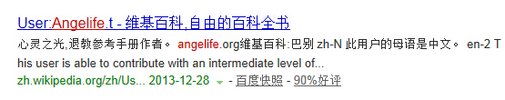

Conversation with 81184027 at Fri 22 Aug 2014 03:10:28 PM CST on 154115835 (webqq)
(03:06:00 PM) 辽宁-沈阳&樱桃: 看客们愤怒了，唾骂着，只是轮到出庭作证的时候又都把头缩了回去，关起门扭开电视，心想，又不是只有我一个人看见！
(03:07:08 PM) 2041072775: :face99:
(03:06:00 PM) 辽宁-沈阳&樱桃: 看客们愤怒了，唾骂着，只是轮到出庭作证的时候又都把头缩了回去，关起门扭开电视，心想，又不是只有我一个人看见！
(03:07:08 PM) 此去经年: :face99:
(03:19:40 PM) 光: 把敢于说真话的人赶出去，但是国民的劣根性并没有根除，问题依旧
(03:32:08 PM) 光: 先看当下移民的特点和趋势：继2003年中国知识分子移民潮之后，有分析认为，中国新出现的这次移民潮主体不再是知识分子或技术工人，而多是在中国国内赚取了大笔财富的富人阶层，他们移民更多是考虑子女教育、宜居环境、社会保障以及外国护照所享受到的便利。
(03:32:33 PM) 光: 对富人中的企业家群体而言，其坚定移民决心的主要原因是国内投资环境的变化或者不稳定。现如今，多数企业家缺乏安全感，比如，国内投资环境变化、税费太高，加之中国社会贫富差距大等，都让企业家忍不住担心：“说不定哪天又要均贫富，太没有安全感了”。
(03:33:07 PM) 光: 李嘉诚等商界大佬近期的频频动作更是为不少富人移民提供了佐证：李嘉诚抛售内地资产，王石说“这是一个信号”；王健林投资澳洲等地，也被解读为内地投资收益率下滑不及抄底海外的讯号。此外，加之中国社会对财富“原罪”的追问、当下社会“仇富”心态等，都让企业家难以找到安全感。
(03:33:47 PM) 光: 中国富人移民热产生便不足为奇了。当然，他们也在观望，并非彻底与祖国切断联络，转换国籍后，子女、家属可能在国外，他们可能还是把中国作为挣钱发财的主战场，华裔身份无非是给了他们自己一份优于中国人寿等公司提供的保险，这张“船票”让他们可以随时选择利于自己的安全地带。
问题自然会逐渐产生：中国的富人离开了，带走了财富、人才也流失了、税收和消费都减少了，一方面，“先富带动后富”的初衷已然违背，一方面又招来痛心与痛骂。只是这样，是否就应该对富人移民进行限制呢？
有网友认为，要进行限制是“因为他们只享受了好政策，却没有承担责任”。但是，从法律层面考虑，移民是公民的正当权利，富人们这样的个人选择不应受到限制。即便是修改法律对其进行限制，其负面效果也不可忽视，限制移民即否定个人对美好生活的追求、否定人权，这样一来，一方面会抑制国民经济发展的活力与动力，一方面则会加剧资本外逃。
(03:34:52 PM) 光: 举例而言，1998年，俄罗斯发生经济危机时，国民和资本都曾想外逃，在此情况下，俄罗斯政府曾采取资本管制措施，虽然收得了一时之效，却由此带来了严重后果，时至今日，外资对进入俄罗斯依然心存忌惮。
前车之鉴已在，限制移民自不可取。可是，财富、人才等流失的问题摆在面前，该如何做？
究其根源，富人选择移民无非是考虑教育、环境、社保、安全等，更多寻求安全感。须知道，移民潮似乎并不可怕，这样的问题也并非中国独有，印度、韩国等并不在中国之下。现阶段，中国通过努力、吸取经验教训并非没有能力让上述情况得以改善。
笔者认为，理性看待，同时有所作为，必是当务之急。环境更健康，教育更优秀，产业更开放，财富更安全，让国民看到进步与希望，想走，是不是就得好好思量？
此外，移民也并非坦途。对新移民而言，难以融入当地主流社会、需给移民国创造更多价值与财富等等压力，都会让那些正在考虑移民的富人好好想想，如何会更好。
作者为网易商业编辑；网易财经原创，转载请注明出处（否则不得转载）。
(03:35:36 PM) 光: http://money.163.com/14/0822/08/A487P6MJ0025519K.html
(03:36:47 PM) 光: 近来关于富人的问题，继续在各大媒体发酵。其中关于移民的话题，一直被各种吐槽。笔者从网易财经21日发布的一条新闻《世界迎来中国富人“入侵风浪”》上看到了这方面的关注，还引发了网友激烈的讨论，跟帖评论达到上万条。
该报道实际是引述俄罗斯《新消息报》8月20日报道称，胡润研究院的调查显示，64%的中国富人（财富不少于160万美元）已经移民、正申请移民或正考虑移民。另有数据显示，从2013年3月到2014年3月，中国人在美购买了价值220亿美元的不动产。如今，海外华侨华人数量约为4800万。
报道称，中国富人的移民潮似乎刚刚开始。专家认为，世界将在近期迎来中国富人入侵的“九级风浪”，而上述情况似乎真的应了一句俗语，“一些富人不是在移民，就是在通往移民的路上”。
最近几年，中国富人移民已司空见惯，他们为何越富越要离开中国？焦虑不安，择优栖居，还是为子孙考虑……个中原因，交织复杂。
(03:40:39 PM) 光: OldLeo1 [网易湖南省网友]： 2014-08-22 09:12:18 发表
环境被破坏了，财富却被卷走了。。。
顶[1147]
回复
收藏
复制
三国传说 关注 关注他的微博 三国传说 [网易河南省许昌市网友]： 2014-08-22 09:11:34 发表
有钱人都移民，不移民是傻b
顶[1034]
回复
收藏
复制
世界级权威评论员 关注 关注他的微博 世界级权威评论员 [网易广东省广州市网友]： 2014-08-22 09:19:53 发表
这有什么好神秘的，就一句话：在中国能赚到钱的人都不是走合法途径的！
顶[896]
回复
收藏
复制
牛爸骑马 关注 关注他的微博 牛爸骑马 [网易广东省中山市手机网友]： 2014-08-22 09:46:47 发表
君不正臣投别国，父不正子往他乡！
顶[846]
回复
收藏
复制
网易上海市手机网友 网易上海市手机网友 ip：140.206.*.* 2014-08-22 09:12:38 发表
因为这两年风声紧了，当官的不定哪天就被逮了，还会牵连一批人，说不定以前赚的黑心钱都白忙了。换谁都得准备跑了
顶[677]
回复
收藏
复制
网易浙江省温州市手机网友 网易浙江省温州市手机网友 ip：124.160.*.* 2014-08-22 09:11:09 发表
人富了就会寻求安全.....这是人性
顶[461]
回复
收藏
复制
网易广东省韶关市手机网友 网易广东省韶关市手机网友 ip：14.159.*.* 2014-08-22 09:13:19 发表
恭喜他们，离开了地狱，
顶[426]
回复
收藏
复制
网易安徽省合肥市手机网友 网易安徽省合肥市手机网友 ip：58.243.*.* 2014-08-22 09:14:26 发表
安全，人权
顶[361]
回复
收藏
复制
巴伐利亚部队 关注 关注他的微博 巴伐利亚部队 [网易北京市朝阳区网友]： 2014-08-22 11:15:34 发表
对富人移民最有效的办法是---国家对于携带超过200万美金移民的国人，可以采取10年或更长时间的限制入境。此招一下就把他们治了，谁都知道国人移民后会来回的两头跑，如果限制他们10年入境的话，对于乡土观念很重的国人来说，将是沉重的打击。
顶[188]
回复
收藏
复制
都是铁兰 关注 关注他的微博 都是铁兰 [网易云南省手机网友]： 2014-08-22 09:14:46 发表
人可以走，钱必须留下！
(03:40:54 PM) 光: http://comment.money.163.com/money_bbs/A487P6MJ0025519K.html
(03:42:48 PM) lost message from #204093 to #204097
(03:45:57 PM) 小绵羊: :)仇富?NO，我也想拥有几千万，但我没那奸商，贪腐，黑心，资本家的头脑，也没祖辈遗产。移民中的富人，我不够格加入!
(03:44:52 PM) 光: 所以中国崛起受益者不是中国
(03:45:46 PM) 光: 64%的中国富人（财富不少于160万美元）已经移民
(03:49:51 PM) 憧憬￠未来: 我感觉 穷人有意向移民的更多
(03:46:57 PM) 光: 嗯
(03:50:15 PM) 小绵羊: 他们带走那么多钱，会影响经济，楼市吗?
(03:47:13 PM) 光: 肯定会啊
(03:50:56 PM) 小绵羊: 汽车会便宜吗?
(03:47:48 PM) 光: 习遇到的绝对是烂摊子
(03:51:43 PM) 憧憬￠未来: 哎
(03:51:51 PM) 憧憬￠未来: 有时候老觉得活着很累
(03:52:01 PM) 小绵羊: 楼市会跌破1000元/平方吗?
(03:49:32 PM) 光: 不晓得
(03:52:43 PM) 小绵羊: 习的生活绝对比我过得好!
(03:53:41 PM) 小绵羊: 瘦死的骆驼比马大!
(03:55:06 PM) 小绵羊: 他拥有多少住房，有多少存款，绝对保密!
(03:56:18 PM) 潮哥: 我们都不知道
(03:56:34 PM) 憧憬￠未来: 光哥
(03:56:34 PM) 小绵羊: 人该去买楼吗?
(03:56:38 PM) 憧憬￠未来: 你有啥挣钱的门道没
(03:56:48 PM) 憧憬￠未来: 给我指个明路
(03:56:55 PM) 憧憬￠未来: :可怜:
(03:57:14 PM) 此去经年: NGO
(03:57:19 PM) 憧憬￠未来: 我觉得生活的幸福感下降好快
(03:57:38 PM) 小绵羊: 去办个邪教!:)
(03:58:59 PM) 小绵羊: 邪教挣钱快，又多!又有色，财色兼收!:D
(04:02:15 PM) 辽宁-沈阳&樱桃: 要有超强的组织能力，颠倒黑白的能力，指鹿为马的能力！
(04:03:44 PM) 小绵羊: 那—个邪教不是财色兼收!
(04:04:57 PM) 小绵羊: 连正教也有性丑闻，和经济问题，何况是邪教!
(04:02:19 PM) 光: 你能创造价值就能赚钱啊
(04:02:59 PM) 光: 好比瑞士表的材料也不过是钢而已么
(04:03:27 PM) 光: 用来做一元钱硬币什么价值
(04:03:34 PM) 光: 用来做瑞士手表什么价值
(04:07:02 PM) 憧憬￠未来: 。。。
(04:07:02 PM) 小绵羊: 邪教创造的是精神价值，企业商家创造了物质价值!
(04:07:10 PM) 憧憬￠未来: 也是
(04:07:38 PM) 憧憬￠未来: 反正感觉至少有钱才有基本的幸福感
(04:04:58 PM) 光: 考虑创造价值
(04:05:05 PM) 光: 然后再考虑赚钱
(04:08:18 PM) 小绵羊: 手里有钱，心头不慌!
(04:05:16 PM) 光: 有价值一定会赚到钱的
(04:05:49 PM) 光: 话说快播的那个怎么被抓了
(04:06:37 PM) 光: http://money.163.com/14/0822/15/A48TB7FH002526O3.html
(04:06:56 PM) 光: 8月8日，全国“扫黄打非”办公室称，深圳快播科技(以下简称“快播”)网上传播淫秽色情信息案主要犯罪嫌疑人、快播公司法人代表兼总经理王欣，在逃往境外110天后被抓捕归案，经国际司法合作渠道由相关国家移交中国警方。经审讯，王欣对明知快播公司服务器内有大量淫秽色情视频的情况下，为牟利放任不管的犯罪事实供认不讳。
在南都记者对王欣过去的采访中，他一直强调自己是个“技术屌丝”，“我们不是司法部门，也没办法抓他们，我们能做的只有通过自己不推荐来尽可能影响他们。”这在某种程度上就等于其承认了“放任不管”的事实。
据快播离职员工小杨(化名)介绍，王欣从4月22日警方到快播突发检查后就再也没有出现，这次王欣出事，快播大部分员工都表示很惋惜。但由于深圳市市场监督管理局将快播2 .1亿罚款推迟到年底，快播公司得以不破产。南山科技园的快播总部关闭了，快播播放器事业部解散了，但多玩事业部、多屏事业部及云帆搜索员工迁到中科大厦照常上班。“快播还是一家坚持技术创新的公司。”小杨如是表示。
(04:07:16 PM) lost message from #204142 to #204142
(04:10:25 PM) 小绵羊: 酒香不怕巷子深，穷在闹市无人知，富在深山有远亲!
(04:07:37 PM) 光: 快播创造了价值
(04:07:43 PM) 光: 所以赚到了钱
(04:07:48 PM) 光: 这是一个很好的例子啊
(04:09:22 PM) 光: “总要有人去做些不太风光的事”
王欣的微博(19.52, 0.16, 0.83%)叫“快播王铁匠”。去年9月份记者曾问其“快播对你意味着什么”，王欣告诉记者，“不是说快播对我意味着什么，而是我只会做这个。也许我一辈子都只会做产品经理，只要有技术创新我就会研究，好玩就行。”
王欣2005年创立快播，当时他刚从盛大辞职回到深圳。“当时注意到电信的VOD在线点播业务一直没做大，主要就是带宽资源不足。”王欣毕业时在电信一家下属公司担任副总经理，对电信业务十分熟悉。“当时我们想法很简单，就是用擅长的P2P技术解决带宽问题，没有所谓的站在视频行业高度看问题。实话说，我们也没有看懂这个商业模式。两年后，我找曾李青谈融资的事情，他也没看懂。但看到我们的用户增长数据，才决定投资，需求摆在那。”王还透露，当时VOD播放器只有realplayer，它对带宽需求太高，我们就是要做一个取代realplayer的产品，而快播1.0 LOGO其实就是realplayer的LOGO倒转过来。
目前，大型视频网站的主要成本由人力、带宽及版权三部分构成。P2P技术降低了带宽成本，中小站长获得了以盗版内容野蛮生长的机会。据业内人士透露，减少了带宽投入，一台网站服务器最多就几万块，被查封就重新换个服务器，这个成本代价远低于几百万一部的电影版权费。
而过去采访中，王欣并不否认小站长的违法行为。“我们是一个服务器公司，强调用技术创新为大家创造更好的用户体验跟创业环境，不涉足内容。快播也不是司法部门，不能去查处这些中小站长，只能说我们从内容搜索上不予以推荐，从自身上尽可能影响他们的商业行为。”王欣说，北京创业者总会谈商业模式，然后进一步融资滚动，风光地站在舆论焦点上。但深圳是务实的城市，快播是务实的公司，“总要有人去做一些有益于用户，但看上去不是很风光的事。”
“在2008、2009年，大家想到快播总会跟一些不良内容联系在一起。事实上，我从来没见过一个小站长，他们只会在论坛上给我们提出一些技术意见。”王欣如是表示。据快播离职员工小杨(化名)介绍，当时有一些站长提出，希望快播成立内容联盟，但王欣从来都是拒绝的。“这也说明我们当时并没有从这些站长中牟利。”
(04:12:03 PM) 光: “还是需要接受游戏规则”
“其实受质疑声音影响最大的不是外部，而是内部。”王欣告诉记者，业内都知道快播是怎样的，反而公司内部，这些流言会很伤士气，也导致人才吸引力的下降。据小杨介绍，王欣每年“起航大会”都会强调，“快播是播放器，不做内容。”“王总对员工挺好的，包括员工福利方面，快播出事了大家也觉得很惋惜。”
其实，去年的快播已经不是单纯的播放器公司或寄托在播放器上的游戏公司。2013年年初，快播成立了版权保护部门，专门与版权方对接，要求中小电影站撤下盗版电影，成立了多屏事业部及云帆搜索项目组，宣布从技术研发转型为内容发行及传播转变公司。
不过其实在多屏互动项目上，快播仍曾经试图以技术手段解决问题，绕开内容门槛。2012年，快播推出“快播大屏幕”，类似U盘性质连接电视与互联网，获取互联网内容，但不久后，这个项目因市场不佳而搁置。
王欣后来承认这种做法有些取巧。“我们之前想法太简单，不愿意受到约束，只希望做自己擅长的技术。几次教训后，我们意识到在国内环境下，如果做盒子就必须要接受管制，接受规则。”2013年，王欣与互联网电视牌照方未来电视合作推出了“快播小方”。当然，这个项目在快播被查处后同样被停止了。
至于云帆搜索，王欣则表示这是在“革自己的命”。据了解，过去快播播放器的默认搜索通过跳转进入百度搜索，藉此与视频内容完全隔离，但云帆搜索作为快播的自主产品，便直接与内容版权挂钩。“我们希望通过云帆搜索强化内容管理与更合理的推荐模式。”王欣如是表示。但可惜的是，据腾讯科技报道，云帆搜索的链接导向指明其与盗版视频网站的商业合作，最终成为其盗版侵权违法的证据。
去年，王欣在采访中透露了他今年的主要精力将放在云帆搜索及多屏互动，依然信心满满希望颠覆行业。“2014年我们将推出革命性的互联网电视，跟现在直接把盒子放在电视里的模式完全不同；另一方面，你觉得现在贴片广告这种模式你喜欢吗？伤害用户的模式不能称之为所谓的‘商业模式’。明年我们将通过云帆搜索与电商合作，寻找用户喜欢的盈利方式。”采访中，王欣总会不经意流露这种对视频行业技术创新不足的不屑，但最终，却是这种“不守规则”的“技术情结”害了他。
(04:12:20 PM) 光: 快播 没有 verycd 等聪明
(04:13:24 PM) lost message from #204150 to #204153
(04:16:33 PM) 辽宁-沈阳&樱桃: 个人觉得邪教比贪官们可恨太多了，贪官们拿走的是钱，邪教伤害的是人们的家庭，且这种伤害大多不可逆转
(04:13:49 PM) 光: 一样的
(04:17:13 PM) 辽宁-沈阳&樱桃: 我认为不一样
(04:14:22 PM) 光: 贪官的钱哪里来的
(04:17:34 PM) 辽宁-沈阳&樱桃: 或许他们的目的是一样的
(04:14:42 PM) 光: 黑社会提供的
(04:14:52 PM) 光: 黑社会的钱哪里来的
(04:15:08 PM) 光: 百姓身上捞的
(04:15:13 PM) 光: 不都一样么
(04:15:22 PM) 光: 一个是间接一个是直接
(04:15:24 PM) 光: 有啥不同
(04:18:37 PM) 辽宁-沈阳&樱桃: 结果不一样
(04:15:40 PM) 光: 好比以前
(04:16:00 PM) 光: 有山匪徒打劫商旅
(04:16:16 PM) 光: 但是官府屡次剿匪都不成功
(04:16:28 PM) 光: 后来发现官府和山大王是分赃关系
(04:16:46 PM) 光: 那么你说这个官和匪有什么区别呢
(04:20:10 PM) 辽宁-沈阳&樱桃: 对人们情感的伤害不一样
(04:17:20 PM) 光: 一个是黑脸，一个是红脸
(04:17:24 PM) 光: 本质都是一样的
(04:20:38 PM) 憧憬￠未来: 好吧
(04:20:44 PM) 福建-福州&水浒: 都是流氓
(04:17:41 PM) 光: 贪官钱哪里来啊
(04:20:56 PM) 憧憬￠未来: 我也不知道自己能创造什么价值
(04:21:02 PM) 福建-福州&水浒: 一个主流，一个次流
(04:21:05 PM) 福建-福州&水浒: :D
(04:21:24 PM) 福建-福州&水浒: 合起来叫共犯
(04:21:42 PM) 憧憬￠未来: http://www.apesk.com/mensa/common_report_getid/ninehouse_report_admin.asp?id=122341
(04:21:44 PM) 憧憬￠未来: 光哥
(04:21:56 PM) 憧憬￠未来: 这是九型人格分析报告
(04:22:02 PM) 福建-福州&水浒: 你交了税收了
(04:20:06 PM) 光: 嗯
(04:23:24 PM) 辽宁-沈阳&樱桃: 就算他贪了钱，所有的百姓都有份，这个也不是我们能管得了的。我们在乎自己的小家，大环境不好，小家也被邪教搅得摇摇欲坠，你说百姓更恨谁
(04:24:17 PM) 福建-福州&水浒: 当然是前者了
(04:24:50 PM) 辽宁-沈阳&樱桃: 我更恨后者
(04:25:02 PM) 辽宁-沈阳&樱桃: 没办法，我就这点觉悟
(04:25:09 PM) 福建-福州&水浒: :D
(04:22:07 PM) 光: (04:21:44 PM) 憧憬￠未来: 光哥
(04:21:56 PM) 憧憬￠未来: 这是九型人格分析报告 //你是INFP
(04:26:36 PM) 憧憬￠未来: 额
(04:26:41 PM) 憧憬￠未来: INFP 上次测的就是
(04:26:47 PM) 福建-福州&水浒: 我不恨邪教，我更甚于前者，就就比如你早上起来发是雾霾天气，是怪上帝的不公，还是怪创造雾霾的人呢
(04:27:52 PM) 福建-福州&水浒: 天还是那个天，宇宙还是那个宇宙，为什么唯独中国的冬天北方的雾霾更严重～
(04:28:26 PM) 辽宁-沈阳&樱桃: 都不怪，怪自己没本事，有本事可以移民
(04:28:59 PM) 福建-福州&水浒: 换深层次想，你的祖国你为什么要逃跑
(04:26:05 PM) 光: 上次无法判断你是INTP还是FP
(04:26:10 PM) 光: 这次可以判断了
(04:29:24 PM) 福建-福州&水浒: 这属于逃避
(04:26:14 PM) 光: INFP
(04:30:01 PM) 辽宁-沈阳&樱桃: 深层次想，地球还是我们的母亲呢，有本事在哪儿都是母亲的怀抱
(04:30:30 PM) 福建-福州&水浒: :p
(04:31:13 PM) 辽宁-沈阳&樱桃: :p
(04:28:06 PM) 光: 一个是打手一个是背后的师爷
(04:28:20 PM) 光: 被打的人恨打手也是正常
(04:31:43 PM) 福建-福州&水浒: 乡土情节等远行的人会领悟到
(04:28:36 PM) 光: 即使谋划的是师爷
(04:32:23 PM) 福建-福州&水浒: 嗯哼
(04:32:55 PM) 憧憬￠未来: 哦
(04:30:02 PM) 光: 就像以前武侠小说里面的
(04:30:12 PM) 光: 一个人把对方的全家都杀了
(04:30:18 PM) 光: 把小孩子带在身边
(04:30:25 PM) 光: 养大
(04:30:35 PM) 光: 这个小孩子还一直当这些人是好人
(04:33:56 PM) 福建-福州&水浒: 嗯哼
(04:34:03 PM) 辽宁-沈阳&樱桃: 基本的生活质量都保证不了，真没心思去矫情乡土情结了大哥
(04:34:26 PM) 福建-福州&水浒: :撇嘴:
(04:31:54 PM) 光: 金庸里面就像杨康
(04:35:33 PM) 福建-福州&水浒: 但是乡愁难耐啊，如华国锋
(04:32:47 PM) 光: 雄霸 收的 聂风
(04:33:05 PM) 光: 好像也是这种情况
(04:33:14 PM) 光: 例子应该不少
(04:45:24 PM) 光: 黑社会通过不法手段从百姓手里捞的第一手金，然后漂白做公司，再收买官府，形成利益联盟
(04:46:07 PM) 光: 老百姓被黑社会欺负
(04:46:16 PM) 光: 最后发现黑社会背后有官府
(04:46:27 PM) 光: 或者发现没人官
(04:46:28 PM) 光: 管
(04:46:38 PM) 光: 那不就是这么一回事么
(04:47:38 PM) 光: 贪官是不作为的
(04:47:48 PM) 光: 只管捞钱
(04:48:40 PM) 光: 某种意义上有黑社会帮他处理一些问题，他还觉得这样对他升迁好处更多
(04:50:28 PM) 光: 商人如果做生意，如果有道上的兄弟帮他解决一些问题，他也觉得方便很多
(04:50:40 PM) 光: 黑社会存在有其合理性
(04:50:47 PM) 光: 他们是做脏活的
(04:53:59 PM) 福建-福州&水浒: :D
(04:51:11 PM) 光: 嗯
(04:55:09 PM) 福建-福州&水浒: 唉:pensive:，真理还是掌握在少数人手中
(04:53:19 PM) 光: 中国人讲饭局的
(04:53:24 PM) 光: 饭局确实可以解决很多问题
(04:53:35 PM) 光: 关键在你和谁一起吃饭
(04:54:19 PM) 光: 时局越复杂，饭局就越兴旺
(04:58:24 PM) 蛋包飯: :D是的:强:
(04:55:23 PM) 光: :face14:
(04:56:47 PM) 光: 老百姓为啥不愿意出面作证
(04:56:56 PM) 光: 还不是不愿意得罪黑社会么
(04:57:37 PM) 光: 这就是治安差的一种表现了
(05:01:10 PM) 福建-福州&水浒: 嗯
(04:58:20 PM) 光: 嗯
(05:01:35 PM) 福建-福州&水浒: 官匪一家亲
(05:02:04 PM) 福建-福州&水浒: 宁波码头工人罢工已经第三天了
(05:02:22 PM) 福建-福州&水浒: 土匪又出洞了
(05:03:24 PM) 辽宁-沈阳&樱桃: 为什么总是聊着聊着，问题就变高级了--b
(05:01:42 PM) 光: 事情有明线和暗线
(05:01:46 PM) 光: 暗线是背后的逻辑
(05:01:56 PM) 光: 明线是台面上的事件
(05:05:18 PM) 蛋包飯:
(05:05:35 PM) 蛋包飯: Angelife--服装品牌
(05:02:29 PM) 光: 哦
(05:02:39 PM) 光: 我的这个名字被人用了
(05:05:53 PM) 憧憬￠未来: 。。。
(05:05:58 PM) 憧憬￠未来: 我们帮你卖衣服好了
(05:02:51 PM) 光: 没有申请专利
(05:06:07 PM) 憧憬￠未来: B-)
(05:03:06 PM) 光: 用就用把
(05:03:08 PM) 光: ：）
(05:06:19 PM) 蛋包飯:
(05:06:20 PM) 憧憬￠未来: Angelife 名字确实挺好听
(05:03:18 PM) 光: 嗯
(05:06:50 PM) 蛋包飯: 
(05:07:00 PM) 蛋包飯: 呵呵，维基也有
(05:04:02 PM) 光: 我的wiki帐号
(05:04:11 PM) 光: 这个名字是我09年想的
(05:04:37 PM) 光: 里面有NGO的意思在
(05:04:46 PM) 光: angelife.org
(05:04:48 PM) 光: 这样的
(05:05:50 PM) 光: 不过好像一开始angelife被人注册了一个成人用品网站
(05:05:56 PM) 光: angelife.com
(05:06:04 PM) 光: 我记得当时是这样的
(05:06:13 PM) 光: 后来我就注册了angelife.org
(05:09:56 PM) 福建-福州&水浒: --b
(05:10:05 PM) 福建-福州&水浒: 成人用品
(05:10:33 PM) 潮哥: 邦邦的最爱
(05:10:42 PM) 蛋包飯:
(05:11:01 PM) 福建-福州&水浒: --b
(05:07:54 PM) 光: 嗯
(05:08:01 PM) 光: wiki的规矩很多
(05:11:26 PM) 蛋包飯:
(05:08:17 PM) 光: 我本来想建立一个退教心理咨询的词条
(05:11:34 PM) 蛋包飯: 您創建的條目退教心理咨询可能侵犯版權:L
(05:08:25 PM) 光: 但是被驳回了
(05:08:29 PM) 光: 嗯
(05:08:53 PM) 光: 我那时候也不太懂wiki的规则
(05:12:06 PM) 蛋包飯: 这份事业可不好做
(05:12:13 PM) 蛋包飯: wiki是外国的
(05:12:18 PM) 蛋包飯: 外国很看重版权
(05:09:18 PM) 光: 其实关键是出处
(05:09:22 PM) 光: 第三方出处
(05:09:36 PM) 光: 我不能王婆卖瓜
(05:09:40 PM) 光: 自己说自己瓜好
(05:09:47 PM) 光: 这个逻辑也是正确的
(05:10:09 PM) 光: 相反如果你做的事情有了一定的社会影响
(05:10:18 PM) 光: 建立这个词条就可以了
(05:14:25 PM) 蛋包飯: 呵呵，事实上。这个新兴的宗教，不是那么易退教的。目前还有不少人想加入。这份退教事业不容易
(05:11:22 PM) 光: 嗯
(05:11:31 PM) 光: 当然这个wiki上也有很多用户
(05:11:43 PM) 光: 这些用户本身也不是很懂wiki的规则
(05:11:49 PM) 光: 所以有这样那样的冲突
(05:12:11 PM) 光: 老用户时间长了就有一些权力
(05:12:43 PM) 光: 不少在上面编辑的人其实是中学生的样子
(05:12:50 PM) 光: 80 90 的
(05:13:53 PM) 光: 而wiki的规矩还是不错的
(05:14:03 PM) 光: 所以总体上内容还是不错的
(05:17:40 PM) 光: 佛山市南海区安格丽妃内衣有限公司
(05:18:02 PM) 光: 不过问题是他也没有一个公司网站啊
(05:19:14 PM) 光: http://www.sibonny.cn/
(05:19:16 PM) 光: 找到了
(05:28:16 PM) 小绵羊: 高速的网络时代，延伸出很多邪恶，其实很多人都在凭借(借用)网络挣钱!
(05:29:15 PM) 小绵羊: 如果没有了网络，没有了电，地球将……
(05:30:50 PM) 小绵羊: 一切都得归功于未知的…………"上帝"!
(05:28:32 PM) 光: 有人的地方就有是非
(05:28:34 PM) 光: 没办法的事情
(05:28:40 PM) 光: 那么什么净土
(05:28:43 PM) 光: 哪有
(05:32:17 PM) 蛋包飯: 安格丽妃(angelife)
(05:32:32 PM) 蛋包飯:
(05:32:42 PM) 蛋包飯: 品牌被注册了;-)
(05:30:02 PM) 光: 应该没有
(05:30:10 PM) 光: 他也只是用用
(05:30:20 PM) 光: 注册品牌是要花钱的
(05:33:35 PM) 蛋包飯: 这是法国品牌？？？蛮讲的吧
(05:33:37 PM) 小绵羊: 对呀!有人就有"罪"!没有了人，就没有是非，对错，正义与邪恶之分!
(05:30:34 PM) 光: 不是
(05:33:46 PM) 蛋包飯: 什么梦特娇，根本就不是法国品牌
(05:30:38 PM) 光: 中国人自己搞的
(05:33:53 PM) 蛋包飯: 中国人喜欢编个外国名字
(05:30:48 PM) 光: 编一个故事
(05:34:14 PM) 蛋包飯: 抬高产品价格。因为中国人骨子里面媚外
(05:31:05 PM) 光: 对不会上网的人吹吹牛
(05:31:25 PM) 光: 如果这样
(05:34:34 PM) 蛋包飯: 编个外国名字抬高产品价格，商家惯用手法
(05:31:33 PM) 光: 那么中国确实不懂上网的人很多啊
(05:31:52 PM) 光: 还是没有商人精明
(05:35:14 PM) 小绵羊: Make in china的进口货!
(05:35:16 PM) 蛋包飯: 嗯。就算会上网也是百度啊
(05:35:23 PM) 蛋包飯: 呵呵，进口个毛
(05:35:47 PM) 蛋包飯: 百度和腾讯是中国互联网的品牌
(05:36:25 PM) 蛋包飯: 在加上360，百度，腾讯撑起了中国互联网
(05:36:52 PM) 小绵羊: 东风日产?郑州日产?还是国产?
(05:37:20 PM) 潮哥: 应该谷歌好点
(05:37:42 PM) 蛋包飯: 日产嘛，当然核心技术在日本。
谷歌是好呀，可惜被政府封杀了
(05:37:56 PM) 潮哥: 被土匪封杀了
(05:37:59 PM) 潮哥: 可惜了
(05:38:20 PM) 小绵羊: 人名也外化!
(05:39:02 PM) 蛋包飯: 取个洋名字貌似就抬高身价了;-)
(05:39:10 PM) 小绵羊: 商品!蒙娜丽沙瓷砖!
(05:39:17 PM) 潮哥: 以前不有个家具吗
(05:39:20 PM) 蛋包飯: 嗯，太多这样的品牌
(05:39:21 PM) 潮哥: 叫什么来着
(05:39:32 PM) 潮哥: 达芬奇
(05:39:43 PM) 蛋包飯: 洋名字，实质上是国产货！
(05:39:48 PM) 小绵羊: 家俱!
(05:40:40 PM) 小绵羊: 出口转内销，赚税!
(05:41:22 PM) 潮哥: 抓住了国人重演媚外的心里
(05:42:06 PM) 小绵羊: 连"打洞"也冠以Make l0ve的美称!
(05:42:36 PM) 潮哥: 共费教育的失败
(05:42:44 PM) 小绵羊: :)
(05:39:49 PM) 光: 我们那时候确实是觉得英文域名比拼音域名好
(05:43:01 PM) 潮哥: 找不到汉唐宋明的高傲
(05:39:58 PM) 光: 但是事实上不是
(05:40:02 PM) 光: hao123
(05:40:03 PM) 光: 开始
(05:40:15 PM) 光: 我们对域名的概念就被颠覆了
(05:40:25 PM) 光: 对于国人来说拼音域名市场更大
(05:41:08 PM) 光: 毕竟中国的网站除了中国人
(05:44:17 PM) 小绵羊: (#204375)有哪个国家的学生必修课是英语?中国
(05:41:15 PM) 光: 外国人是不看的
(05:41:36 PM) 光: 所以英文域名对中国国人没有实际意义
(05:41:55 PM) lost message from #204378 to #204378
(05:45:04 PM) 小绵羊: 卖萌!
(05:45:17 PM) 潮哥: 是啊，我公司网站都是搞了个sz加个公司的汉语拼音
(05:42:16 PM) 光: 嗯
(05:43:00 PM) 光: 所以我现在的域名在国外可能算好域名
(05:46:12 PM) 潮哥: .com
(05:43:06 PM) 光: 英语系国家
(05:43:13 PM) 光: 在国内就不算好域名
(05:43:19 PM) 光: 不方便记忆
(05:43:32 PM) 光: 记忆的前提他要懂英文呢
(05:43:39 PM) 光: 这就有门槛了
(05:46:58 PM) 小绵羊: 内销也Make in china!
(05:43:55 PM) 光: 嗯
(05:44:09 PM) 光: 所以我犯的常识性错误还挺多的
(05:48:32 PM) 潮哥: 呵呵，我现在做的中性包装也是Made in China
(05:45:30 PM) 光: 嗯
(05:48:50 PM) 小绵羊: 见人讲人话，逢鬼讲鬼话，见了上帝说"阿们"!
(05:48:56 PM) 潮哥: 上面都是英文
(05:50:29 PM) 潮哥: 说明书搞个中英文搞定
(05:52:08 PM) 蛋包飯: :face64:
(05:52:44 PM) 小绵羊: 五饼二鱼?
(05:49:53 PM) 光: 产品经理的核心秘诀 不要比用户聪明
(05:50:04 PM) 光: :face14:
(05:50:46 PM) 光: 产品经理首先是用户，而且是不聪明的用户
(05:54:08 PM) 潮哥: 会坠入孤芳自赏的境地
(05:51:05 PM) 光: 嗯
(05:54:26 PM) 小绵羊: 适合经商吗?光!
(05:51:35 PM) 光: 我啊
(05:51:37 PM) 光: 够呛
(05:55:19 PM) 潮哥: :p
(05:52:20 PM) 光: :face14:
(05:55:44 PM) 小绵羊: 不要比用户聪明，适合商业界吗?
(05:52:48 PM) 光: 适合
(05:56:11 PM) 小绵羊: :)
(05:53:09 PM) 光: :face14:
(05:57:24 PM) 小绵羊: 别人问我"什么商品更好"时，我该怎回答!
(05:55:28 PM) 光: 不晓得
(05:59:15 PM) 小绵羊: 比如，苹果好还是诺基亚好!
(05:56:25 PM) 光: 高技术的人一定说nokia好了
(05:56:35 PM) 光: 便宜好用
(05:56:42 PM) 光: 丢了不心疼
(05:57:08 PM) 光: 一天丢一个nokia还好
(05:57:16 PM) 光: 一天丢一个苹果你试试看
(06:00:58 PM) 小绵羊: 我是商人!怎么说，怎么
(05:58:05 PM) 光: 利润高的好了
(05:58:19 PM) 光: 商人就是要把梳子卖给和尚的人
(05:58:35 PM) 光: 追求利益最大化
(05:59:16 PM) 光: 不过推销看人
(05:59:27 PM) 光: 如果你推销给我苹果，估计我是不会买的
(05:59:32 PM) 光: 没这个需求
(06:02:47 PM) 福建-福州&水浒: 光先生
(05:59:45 PM) 光: 嗯
(06:03:24 PM) 福建-福州&水浒: 群文件不是原来有刘晓波的文集？
(06:03:32 PM) 福建-福州&水浒: 怎么找不到了呀
(06:00:38 PM) 光: 如果没有是不是被删了
(06:00:46 PM) 光: 不晓得
(06:04:20 PM) 福建-福州&水浒: 被删了？
(06:01:18 PM) 光: 嗯
(06:04:40 PM) 福建-福州&水浒: 我记得有三本吧
(06:01:43 PM) 光: 不记得了
(06:04:58 PM) 福建-福州&水浒: :L
(06:02:17 PM) 光: 网站搞好之后
(06:02:25 PM) 光: 花时间搞一个书库
(06:02:44 PM) 光: 注册几个大网盘同步一下
(06:02:50 PM) 光: 这个问题就解决了
(06:02:51 PM) 光: 没事的
(06:03:51 PM) 光: 我在考虑有没有必要建立一个书库网站
(06:03:58 PM) 光: 就怕侵权
(06:04:47 PM) 光: book.angelife.org
(06:04:54 PM) 光: 用这个子域名来稿
(06:05:01 PM) 光: 搞
(06:09:59 PM) 福建-福州&水浒: 嗯
(06:06:56 PM) 光: 嗯
(06:10:21 PM) 福建-福州&水浒: 很好:强:
(06:07:19 PM) 光: 嗯
(06:12:06 PM) 小绵羊: 商人难免不犯"罪"，店员难免不失言!:
(06:23:13 PM) 光: 安格丽妃(angelife) 这个好像是用拼音的方式来发音的